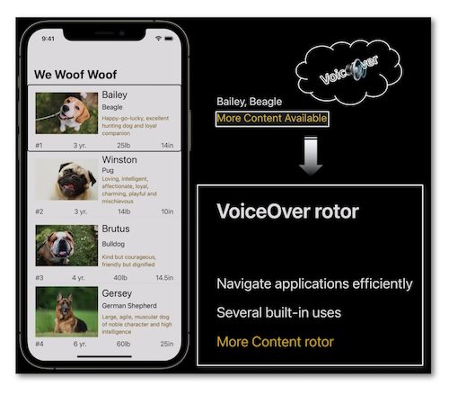
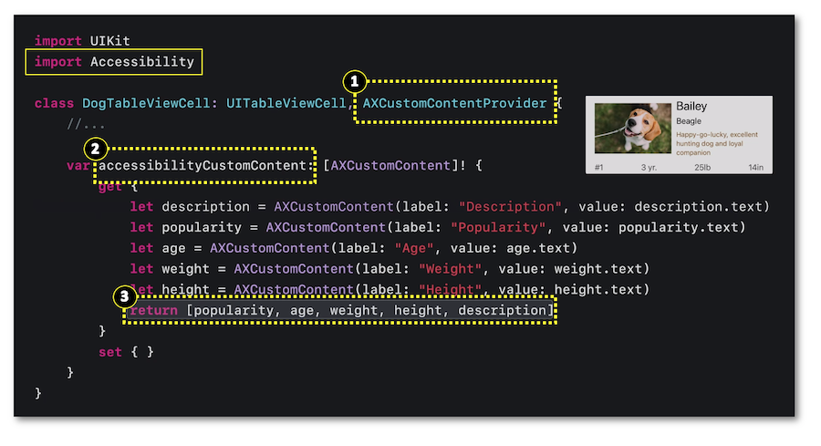

WWDC 2021: Tailor the VoiceOver experience in your data-rich apps
This video available on the official Apple website (session 121) introduces the Accessibility Custom Content feature available since iOSÂ 14 that eases the way to handle the data-rich presentations for the VoiceOver users.

Various contents and their video timelapse are indicated hereunder:
-
Introduction (00:20)
-
Functioning (02:29)
-
Coding with UIKit (04:57)
-
Coding with SwiftUI (07:43) ⟹ new in iOS 15
Introduction (00:20) #
The use of VoiceOver may quickly become tedious when a bunch of data is presented and when each one of these data isn't of particular interest to the user.

For a better understanding of the Accessibility Custom Content feature, an application is introduced to highlight the points that its implementation will optimize.
It's mandatory to import the Accessibility framework available since iOSÂ 14 to use the AXCustomContentProvider protocol and the AXCustomContent class to insert this feature in an appropriate way.

Functioning (02:29) #
A dedicated vocalization is automatically triggered by VoiceOver to notify the implementation of this feature that provides the user with the opportunity to get more information thanks to the rotor if need be.

By selecting the More Content rotor item, the user can access the information highlighted by this vocalization.
Then, a one finger vertical swipe successively scrolls through each element of the info list ⟹ 🎬
It's important to notice that the Accessibility Custom Content feature must be activated in the user settings to be integrated by VoiceOver in its speech analytics ⟹ 🎬

Coding with UIKit (04:57) #
Few essential steps must be followed to implement the Accessibility Custom Content feature:
-
Import the
Accessibilityframework. -
The element holding the feature must adapt the
AXCustomContentProviderprotocol. -
Define the
accessibilityCustomContentproperty with each element that may be vocalized. -
Gather all these possible vocalized elements in an array that will be associated with the previously defined property.

The final result is excellent but might be improved by highlighting a specific item during the initial selection ⟹ 🎬

The iOS developer section of this site contains a potential additional information of this feature that have been written last year at the end of the WWDC20.
Coding with SwiftUI (07:43) #
The adaptation of the Accessibility Custom Content feature to SwiftUI is a brand new adjustment in iOSÂ 15.
Following the SwiftUI rationale enables a less disparate information layout than the UIKit structure.